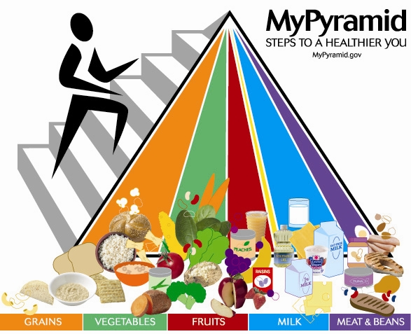

eating habits



- When it comes to Eating Habits, our gallery dives into mindful eating practices, portion control, meal prep tips, and healthy snack ideas. We feature images that demonstrate the power of planning ahead, eating with intention, and nourishing your body with the right foods at the right times.
Sleep Habits are just as important as what you eat, and our gallery includes peaceful, calming images that remind you of the importance of rest. From cozy bedroom setups to nighttime rituals, these photos encourage you to prioritize sleep as a key part of your wellness journey.
Lastly, our Exercise section is full of action-packed images showcasing a wide variety of workouts. Whether you’re into yoga, strength training, cardio, or outdoor activities, these images motivate you to get moving and incorporate fitness into your daily routine. They show that exercise is for everyone and can be fun, energizing, and rewarding.
Explore our gallery and let these images inspire you to adopt a healthier, more balanced lifestyle, one step at a time. It’s all about finding a routine that works for you, and we’re here to guide you along the way!
Healthy Eating: Information and Tips on Maintaining a Balanced Diet Healthy eating is essential for maintaining overall well-being, energy, and preventing chronic diseases. A balanced diet is the foundation of good health, providing your body with the nutrients it needs to function at its best. Here are some key principles and practical tips to help you maintain a nutritious and well-rounded diet: healthy eating is not about being perfect. It's about making consistent, balanced choices. Occasional treats or indulgences are okay. The key is to balance them with nutritious meals and maintain an overall healthy lifestyle.
1. Incorporate a Variety of Foods A balanced diet includes a wide range of foods from all food groups: fruits, vegetables, whole grains, lean proteins, and healthy fats. Each food group provides unique nutrients essential for your body’s growth, repair, and energy production. Aim for a colorful plate that features a variety of fresh, nutrient-dense foods.
2. Prioritize Whole Foods Opt for whole, unprocessed foods whenever possible. Fresh fruits and vegetables, whole grains like brown rice and quinoa, lean meats, fish, legumes, and nuts are rich in vitamins, minerals, and fiber. Minimize highly processed and sugary foods, as they often contain added sugars, unhealthy fats, and preservatives that can contribute to weight gain and health problems.